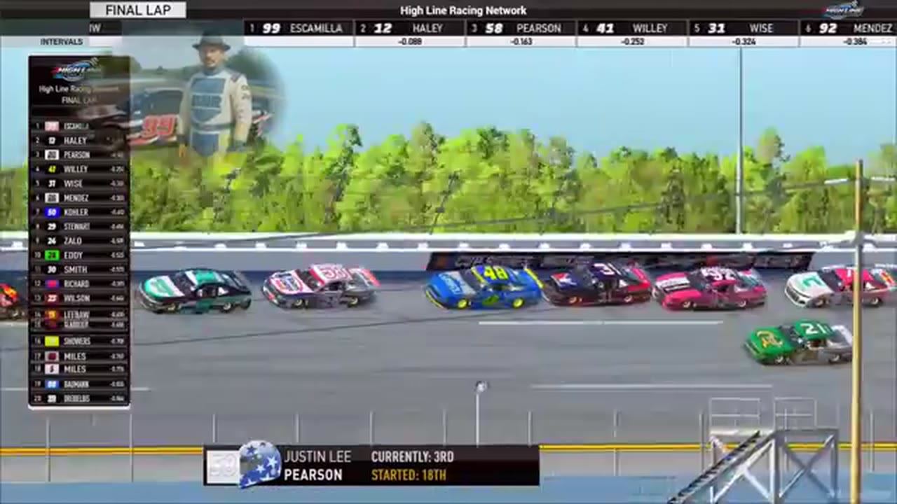

League Race at Talladega
A last-lap crash split the pack, and Juan Escamilla held Justin Lee Pearson by a nose in the first true photo-finish file of Season 1.

- Date
- January 5, 2026
- Track
- Talladega
- Race tape
- 2h 22m
- Exact chapters
- 18
Juan Escamilla reaches the record
The primary Talladega results readout records Juan Escamilla first, Justin Lee Pearson second, and James Mendez third after the photo finish.
TAPE-SUPPORTED. Only explicitly supported positions are published; a nearby running order is never promoted into a finish.18 ways back into the race
Every link opens the complete broadcast at the reviewed timestamp. Chapter summaries are navigation claims unless explicitly marked as result-supported.
-
RESTART · OPENINGOPEN EXACT CUT
The Talladega field takes the opening green
Juan Escamilla and Larry Eddy bring the actual Talladega league field to green with Michael Wiley in the second row. The earlier Nick Bowman and Craig Martin clip belongs to the embedded Michigan recap, not this race.
-
BATTLE · OPENINGOPEN EXACT CUT
Talladega stacks six rows deep in the opening draft
Michael Wiley moves high as the Gen 6 field forms three-wide lanes six to seven rows deep. Juan Escamilla controls the front while Evan Perry appears in the middle of the pack.
-
INCIDENT · MIDDLEOPEN EXACT CUT
A multi-car crash brings out the Talladega yellow
S1 / R8 at 50:38: The caution sequence centers the replay call on Randy Showers. This is a source-bounded incident window; it preserves what the booth reviews without assigning unsupported fault.
-
STAGE · MIDDLEOPEN EXACT CUT
Nick Bowman takes Talladega Stage 1 through an early wreck
Cars begin spinning as lap 20 arrives, but Nick Bowman reaches the Stage 1 line first. The scheduled caution follows while HLRN restarts its timing display and prepares the next pit cycle.
-
STRATEGY · MIDDLEOPEN EXACT CUT
Talladega's pit cycle promotes Carson Rowland and Justin Lee Pearson
HLRN returns live as the field exits pit road and projects Carson Rowland ahead of Justin Lee Pearson, Evan Perry, and Billy Rickett. The window is a running-order reset produced by the pit cycle, not Pearson entering pit road.
-
INCIDENT · MIDDLEOPEN EXACT CUT
Scott Wise and Nick Bowman surface in the Talladega caution replay
S1 / R8 at 1:12:15: The caution sequence centers the replay call on Scott Wise, Nick Bowman, and Shawn Stamper. This is a source-bounded incident window; it preserves what the booth reviews without assigning unsupported fault.
-
STRATEGY · MIDDLEOPEN EXACT CUT
Trevor Haley enters the Talladega pit-strategy swing
S1 / R8 at 1:22:15: Pit timing starts to reorganize the field, with Trevor Haley, Zack Cato, and Larry Eddy named in the sequence. The clip is a strategy receipt from the primary Talladega broadcast, not a reconstructed scoring sheet.
-
STAGE · MIDDLEOPEN EXACT CUT
Stage 2 countdown at Talladega
S1 / R8 at 1:23:11: The broadcast enters a stage-scoring discussion at Talladega with Trevor Haley, Zack Cato, and Evan Perry in the scoring call. The clip preserves the on-air timing or points call without promoting it into a complete stage result; the accepted feature result ledger remains separate.
-
BATTLE · MIDDLEOPEN EXACT CUT
Trevor Haley and Michael Wiley carry the Talladega lead battle
S1 / R8 at 1:36:22: The Talladega pack compresses in a front-pack fight while Trevor Haley, Michael Wiley, and Randy Showers are named on the call. The chapter keeps the live battle intact and makes no finishing-order claim.
-
INCIDENT · MIDDLEOPEN EXACT CUT
James Jepsen and Michael Wiley surface in the Talladega caution replay
S1 / R8 at 1:40:46: The caution sequence centers the replay call on James Jepsen, Michael Wiley, and Zack Cato. This is a source-bounded incident window; it preserves what the booth reviews without assigning unsupported fault.
-
BATTLE · CLOSINGOPEN EXACT CUT
Trevor Haley and Jim Duda carry the Talladega lead battle
S1 / R8 at 1:47:18: The Talladega pack compresses in a front-pack fight while Trevor Haley, Jim Duda, Michael Wiley, and Justin Lee Pearson are named on the call. The chapter keeps the live battle intact and makes no finishing-order claim.
-
FINISH · CLOSINGOPEN EXACT CUT
The white flag opens Talladega's final run
S1 / R8 at 1:52:40: The white flag opens the final-lap decision at Talladega. The cut continues through the immediate finish call on the full primary broadcast.
-
INTERVIEW · CLOSINGOPEN EXACT CUT
Juan Escamilla joins the booth before the restart
S1 / R8 at 1:55:06: Juan Escamilla and Trevor Haley join the HLRN booth for a first-person race account. The interview is preserved as context and does not create a placement claim outside the accepted result ledger.
-
INTERVIEW · CLOSINGOPEN EXACT CUT
Randy Showers joins the booth before the restart
S1 / R8 at 1:58:07: Randy Showers joins the HLRN booth for a first-person race account. The interview is preserved as context and does not create a placement claim outside the accepted result ledger.
-
RESTART · CLOSINGOPEN EXACT CUT
Michael Wiley and Juan Escamilla bring Talladega back to green
S1 / R8 at 1:59:10: Michael Wiley, Juan Escamilla, Justin Lee Pearson, and Trevor Haley are in the booth's front-pack call as Talladega returns to green. The cut keeps the restart launch and the first lap of lane development together.
-
POSTRACE · CLOSINGOPEN EXACT CUT
Juan Escamilla and Justin Lee Pearson anchor the Talladega post-race result review
S1 / R8 at 2:07:13: The reviewed live-race close has passed before this Talladega result booth review begins with Juan Escamilla, Justin Lee Pearson, James Mendez, and Scott Wise named in the discussion. It remains post-race context, not a new incident, stage, strategy call, finish, or result receipt.
-
RESULT · CLOSINGOPEN EXACT CUT
Juan Escamilla is confirmed atop the Talladega results
The primary Talladega results readout records Juan Escamilla first, Justin Lee Pearson second, and James Mendez third after the photo finish.
-
POSTRACE · CLOSINGOPEN EXACT CUT
The Talladega desk reviews the pit-strategy sequence
S1 / R8 at 2:14:49: The reviewed live-race close has passed before this Talladega strategy booth review begins. It remains post-race context, not a new incident, stage, strategy call, finish, or result receipt.
All 20 official winners are backed by position-specific calls in a primary broadcast or an HLRN-authored companion episode. Complete finishing orders, points, and starts remain open until owner records are supplied.